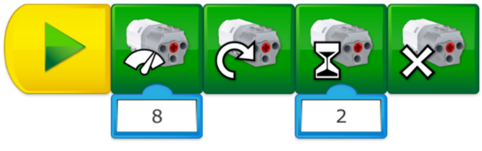
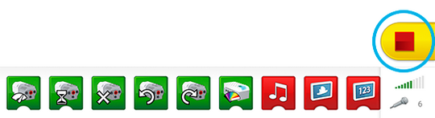
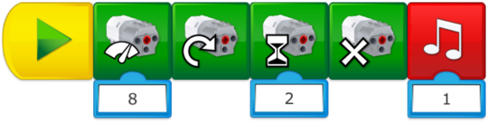
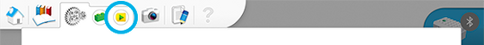

Programmeerhulp
Milo programmeren om vooruit te bewegen
Wanneer op de groene pijl wordt getikt:
-
Start het programma
-
Start de motor op vermogen 8
-
Start de motor in de andere richting
-
Start de motor gedurende 2 seconden
-
Stop de motor

De motor besturen
De motor kan:
-
In twee richtingen starten
-
Stoppen
-
Op verschillende snelheden starten
-
Voor een bepaalde periode starten (in seconden opgegeven)
Alle acties op elk moment stoppen
Een programmalijn kan altijd worden gestopt door op het pictogram Stop te drukken.

De programmalijn wijzigen
Geef de leerlingen tijd om de parameters van deze programmalijn te veranderen. Laat hen nieuwe functies ontdekken, zoals het toevoegen van geluid.

De programmabibliotheek gebruiken
Als je wilt, kun je van deze gelegenheid gebruikmaken om je leerlingen naar de programmabibliotheek te verwijzen, zodat ze inspiratie kunnen opdoen over andere programmalijnen die ze kunnen gebruiken.
